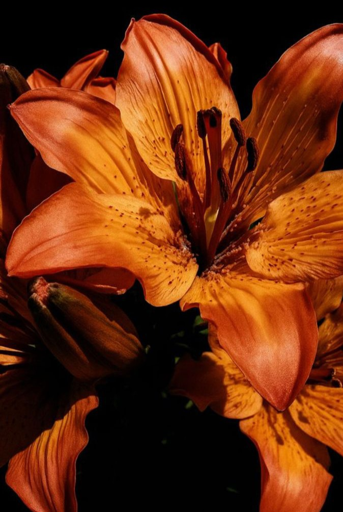
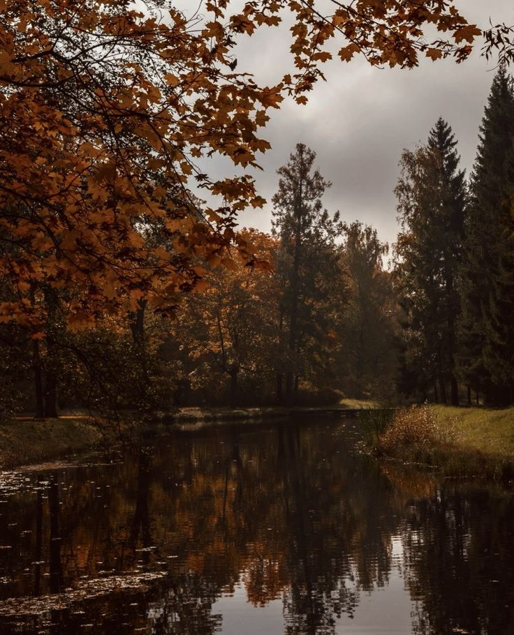
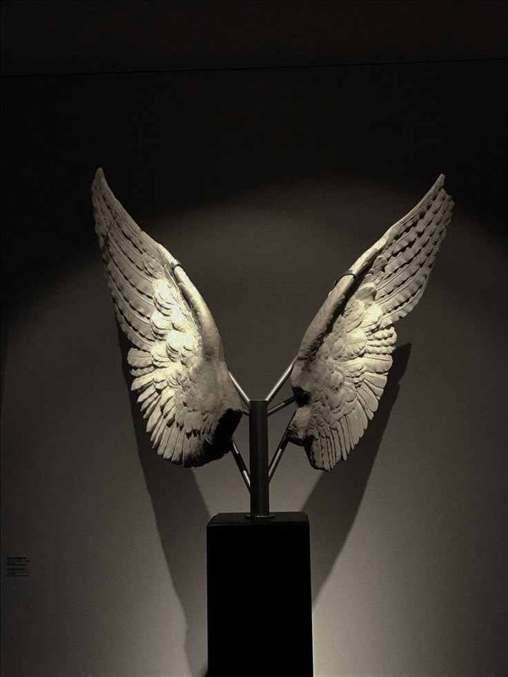
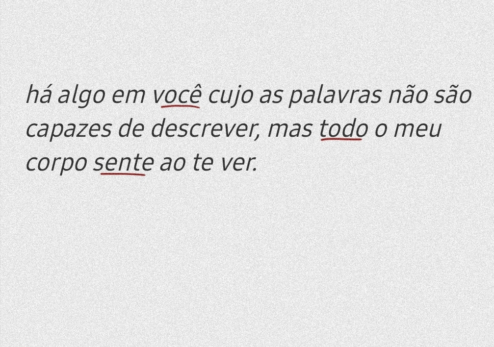
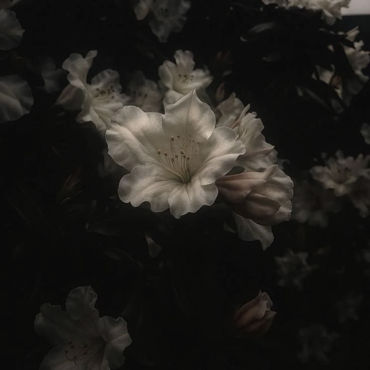
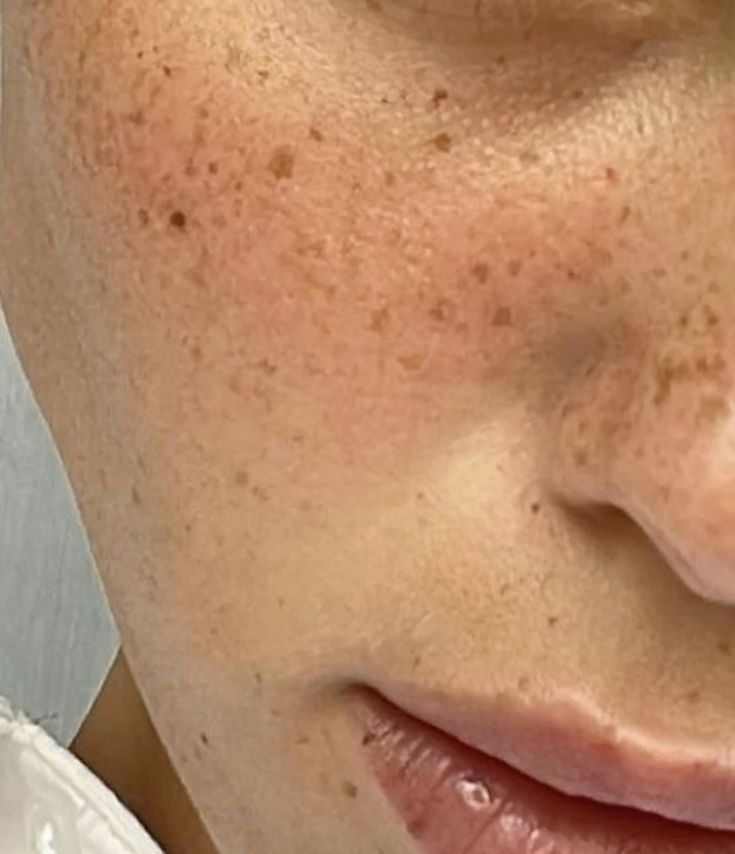

❮
Tudo Me Lembra Você
Pavlovich
Para Angel Belluci Masaki
Este pequeno livro é um presente para você. Uma coleção de coisas que sempre acabam me levando até você.

Elegantes, intensos e impossíveis de ignorar — exatamente como a sua presença.

Existe poder na maneira como certos passos são dados.
Delicadeza que exige força.

Beleza no estranho. Romance nas sombras.
Intenso, elegante e sempre carregando um pouco de mistério.

Porque você transforma expressão em algo que se sente.

Algumas pessoas parecem ter sido escritas em verso.

Existe uma beleza silenciosa nas emoções profundas.

Pequenas constelações que tornam alguém ainda mais único.
Histórias gravadas na pele.
Epílogo
Mas existem coisas que não cabem em imagens. Seu ciúme discreto, a provocação que sempre aparece no momento certo, sua intensidade, sua inteligência, e essa forma única de existir no mundo. Talvez seja por isso que, quanto mais descubro sobre você, mais vontade tenho de continuar virando as páginas.
❯